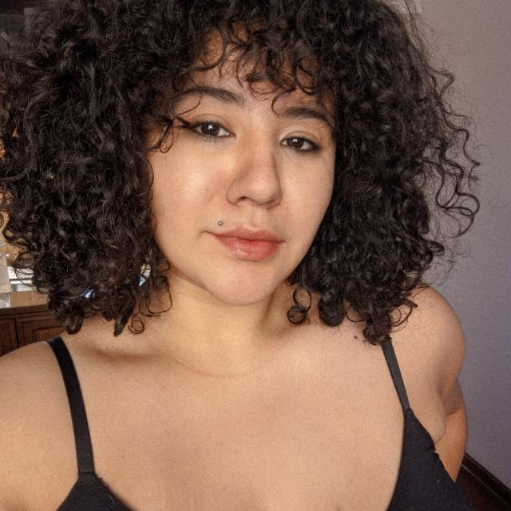
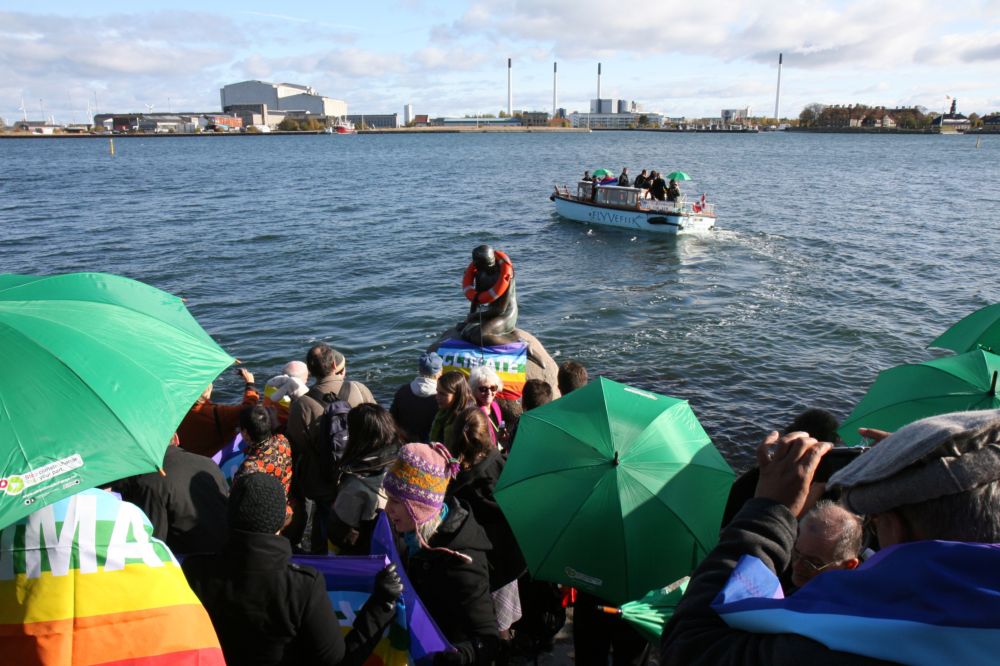
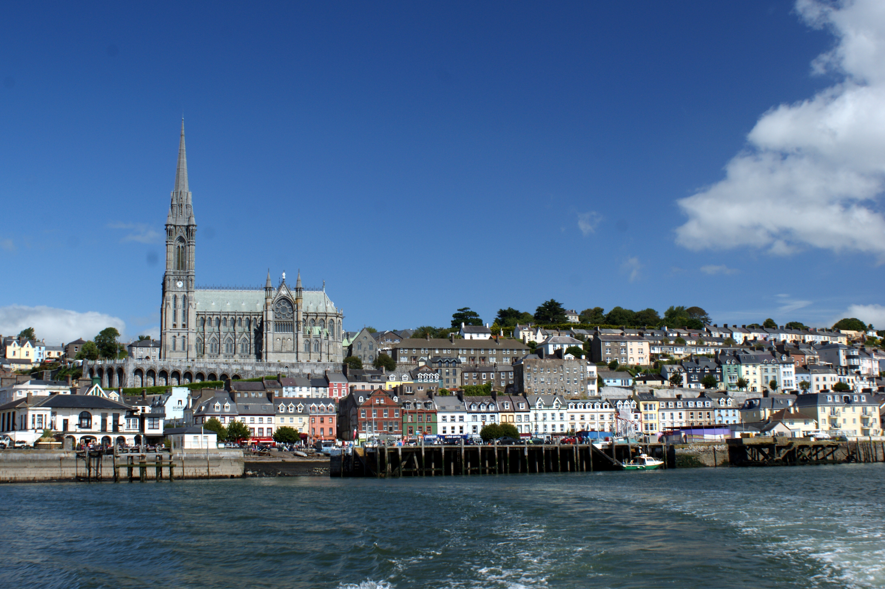
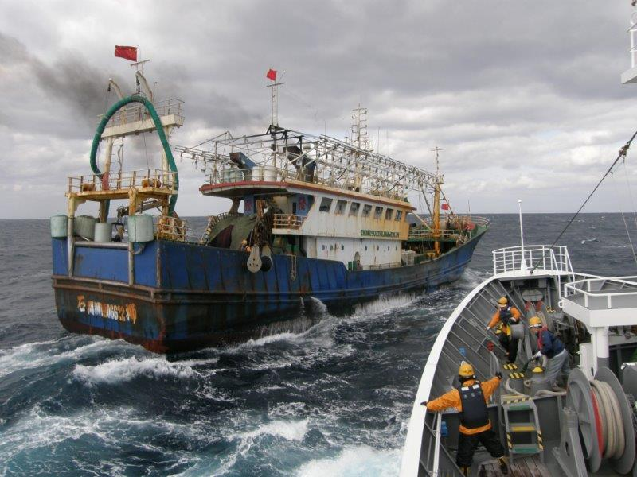

laurinha
do camarão
engenheira de pesca

38 anos, natural do rio de janeiro/rj
formada pela ufrpe em engenharia de pesca
especializada em estudos oceanográficos
engajada na pesca sustentável

copenhague, dinamarca

flórida, eua

cobh, irlanda

mar do japão